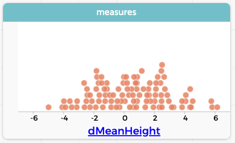
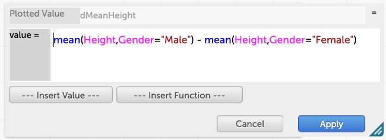
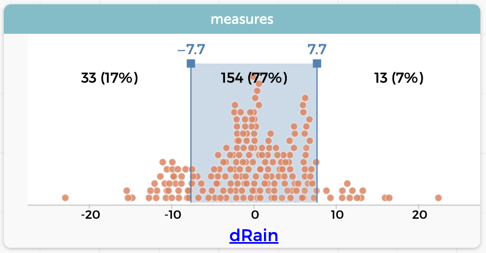

26 The Scrambler: Randomization Tests
This is one of the deeper, more complex topics in this book. If you already understand about randomization-based inference, this will be easy. If not, it may take a while to sink in.
There is also the issue of how to make CODAP help you, that is, how to “drive” the scrambler plugin. If you just want driving instructions, open up the plugin (it’s in the Plugins tool) and press the blue “info” button.
In this chapter, we will first give a sort of minimal orientation and then step you through two examples that, I hope, straddle the border between driving instructions and revealing the underlying concepts.
26.1 The problem setup
Let us return to the heights data we looked at in one of our first lessons. The dataset had measurements (including height) for 800 children and teens, ages 5–19.
We have set aside all but the 13-year-olds, and plotted the heights of the boys and the girls. On average, the boys are taller. Not all the boys are taller than all the girls—there is an overlap—but the overall trend is clear.

Height for 59 13-year-olds.And yet we wonder: this sample we have, of only 59 kids, does this difference reflect a real difference between all 13-year-old boys and girls? Or could it be that we got a difference this large just by chance alone?
Put another way, with slightly different language:
We believe there is an association between Height and Gender: boys are taller. We are concerned that the height difference we see might be due to chance alone, when in fact, there is no association.
26.2 The scrambling strategy
Here’s the plan:
We will create fantasy universe where is definitely no association, and see how big a difference we get. We’ll do this by scrambling the values in one of the columns (it doesn’t matter which). In our example, we will mix up all the Genders so that the Male and Female values are all randomly assigned. Then we’ll see how big the difference is between these “boys” and “girls,” knowing that this difference is definitiely by chance.
We will then re-scramble many times, recording the differences, and see how often we get a difference as large as we saw in the original data.
What difference, precisely, are we talking about? We get to decide. For this lesson, we will choose the difference in mean heights, which is 5.87 cm.
When we do this scramble, and randomly assign Gender to all of the Heights, we expect the difference to be 0.00, right? Not exactly zero, but close.
Let’s see what happens using CODAP’s scrambler plugin.
26.3 Your first scramble
We will do this slowly.
or use the live demo below. It will be cramped, but it’s doable!
You should already see:
- A table with 59 cases, with
GenderandHeight(just afterWeightto the right). - A quantity to the left,
dMeanHeights, with a value of 5.87. This is the (true) difference in mean heights between the males and females in the sample. - A box, the scrambler, with a number of controls. Importantl, it says that it’s OK to scramble
Gender, that is, everything is set up correctly. - A blue information button in the scrambler itself. It opens a help page; you can use it later in your life when you get confused and these pages are not right in front of you.
Do these steps:
- Make a graph of
Height(vertical axis) againstGender. Put means on the graph, and verify that the difference in means is about 6 cm. Make the graph narrow. you’ll need a lot of space! - In the scrambler, press the 1x button. This does one scramble.
A new table, measures_heights appears with one value under dMeanHeight. This value is the difference in mean heighhts in the “scrambled” dataset. But you can’t see the scrambled dataset right now! Let’s fix that:
- Click the show scrambled button in the scrambler. The scrambled table appears. The value for
dMeanHeightshould match the one in the measures table.
- Scroll to the top of that table and verify that the
Gendervalues are in fact scrambled! - Make a graph of
HeightagainstGenderfor that table. Put the means on that graph. You will need to scrunch up some things to make them all fit!
You should see that the means are closer together.
- Press 1x a few more times and see what happens. Notice that when you do, the measures_heights table records the new value of
dMeanHeight. - Graph that
dMeanHeightfrom measures_heights. - Press 10x a few times to get more points in that graph.
I did this for a total of 100 measures. My measures graph appears below. Yours will be different, of course, but should look more or less the same:

dMeanHeight is 5.87 cmThis is the payoff: In the graph, you can see that at most three points are as extreme as the real data, the 5.87.
That is, if there were no difference bewteen boys’ and girls’ heights, we might see differences this large in 3% of our samples.
That small value (called the \(P\) value) makes us confident that the mean height for all 13-year-old boys really is greater than the mean height for the girls.
No. It helps when you’re first learning so you can see what’s going on, but once you get the hang of this, you only need to see the measures.
This will save a lot of screen space!
26.4 Another example: rain in Seattle and Portland
In the previous example, the scrambler plugin was all set up for you. This time, you’ll do it yourself.
Your data will be from the NOAA plugin, and consists of daily observations from two airports, Portland, Oregon (PDX) and Seattle-Tacoma (SEA), in 2021. The graph shows the daily precipitation, precip, in inches. My stereotype (and maybe yours) says that Seattle will be rainier.

What a weird-looking graph…but it makes sense. Many days have zero rainfall or only a little. How will we make sense of this? If we compare the mean, it looks as if Seattle has a higher mean rainfall, but not by a lot. Could that be due to chance?
We need a measure. Let’s compute the total yearly rainfall for the two cities. Then we could subtract those numbers to get a measure, maybe called dRain, that tells us how big the difference really is. How will we make that formula?
26.4.1 Making a formula for the total difference
We did something very similar before, for dMeanHeight. Let’s look at its formula:

You could do something analogous for this problem. But the formula is long and complicated and it’s easy to mess up. We’ll do this instead:
Make one attribute for the total Portland rainfall (
PDXrain) and a separate one forSEArain. You should do this without dragging anything to the left.The formula for
PDXrainissum(precip, where="PDX"). Don’t forget the quotes! You might remember this syntax from the summarizing chapter.Make a third new attribute,
dRain, whose formula is simply
SEArain - PDXrainThe right side of your table should look something like this:

dRainYour value for dRain should turn out to be 7.76, the amount that Seattle’s rainfall was bigger than Portland’s.
26.4.2 Ready to scramble!
- Make the three new attributes as we described above.
- Choose scrambler from the Plugins tool. It will complain that you need a measure dragged to the left.
- Drag all three new attributes to the left.
- Now it wants to know what attribute to scramble. We’ll scramble
where. Dragwhereinto the scrambler and drop it.
Now your scrambler is ready! It should look like the illustration in the margin. Proceed with your investigation.

- Start with one scramble to be sure it works. Look at the scrambled dataset if you want—but be sure to put it away before you scramble a lot; having it visible will slow the process down.
- Graph your scrambled value of
dRain. - Keep scrambling until you get 200 measures. Make sure the graph is updating so you see the distribution.
- Let’s be smart about counting the extreme points this time. Do this:
- In the ruler palette of the graph, press the Movable value button twice and Add it.
- Move one of the movable values to –7.76 and the other to +7.76. You will see the range highlighted.
- In the ruler, up at the top of the palette, click the boxes for Count and Percent.
My graph looks like this:

dRain values. 23% were more extreme. Notice that if a point were at ±7.7, it would not look particularly unusual. It would plausibly be part of this dataset.Interesting! My preconception—that Seattle is rainier—is right in that it got almost 8 inches more rain, but this analysis suggests that it might not be such a big deal.
More precisely, it suggests that if there were no association between the city and the rain, we would get a difference of 7.76 or more roughly a quarter of the time…
And things with a probability of 1/4 happen a lot.
Does that mean that Seattle is in fact not rainier? No. But it does mean that these data, on their own, are not enough to rule out chance.
We could have made just one measures formula, with the subtraction, just as we did with the heights. But making two extra columns doesn’t cost you anything, and makes the formulas easier to understand.
You might wonder, why not drag
whereto the left and computetotalRainfallthere? Then you’ll have one row for Portland and one for Seattle, each with its total rainfall.True. And that’s exactly what we would do if we weren’t scrambling. But to scramble, we have to compute the difference. We can do that, but it’s a little more complicated. By all means, explore that possibility on your own!
26.5 Commentary
There is a lot to think about with scrambling; here are several related topics.
26.5.1 Teaching and learning scrambling
Learning scrambling is partly about what commands to issue when. Mor important, however, is helping students understand what the software is accomplishing. That comes with time, but it’s worth it here to list what some of the understandings.
A scrambling situation and its solution have several elements:
- The problem involves some kind of difference between groups—or a difference between your data and some fixed value.
- You need to create a measure, typically an attribute with a formula, that expresses the difference you’re investigating.
- You need to choose an attribute to scramble; typically that’s the attribute that defines the groups.
- The scrambler creates scrambled datasets and collects values of the measure. You have to decide how many times to scramble, that is, how many values will be in your distribution. This becomes the denominator in your \(P\)-value; but the exact number doesn’t matter. It should be at least 100, and usually 400 is plenty.
- To decide whether the difference is real, you must compare the true value of the measure (the test statistic) with the distribution you just collected. If the test statistic would be a typical value in that distribution, then the data are consistent with there being no difference.
Maybe most important is a central concept we have not explicitly named: the null hypothesis. This is the fictional, alternate-universe situation in which there is no association between the groups and the measure: in this fantasyland, gender is not related to height; rainfall is not affected by whether you’re in Seattle or Portland. Scrambling makes the null hypothesis true, but in a stochastic way: there will be a difference between the groups, but that difference is due to chance alone. So it will be different every time—but not too different.
Understanding this can help students realize an important truth: in real life, the null hypothesis is never true. There is always some gender difference; the rainfall is never the same. We are only asking whether the true situation is consistent with the fantasy situation of no difference.
This is connected with modeling in that we make probability models all the time, in which, for example, a coin has a 50% chance of coming up heads.
But a coin never has a probability of exactly one half. It’s just close enough that we make predictions as if it were.
The measure The measure is where you get to be creative. The only requirement is that it apply to the entire dataset. That means it’s probably built out of “aggregate” functions such as mean(), sum(), or count(). Learning to write the formula for your measure is often the hardest part of this for many students.
I love the fact that we get to make our own measures out of something that makes sense in the context, such as the difference in total rainfall.
This is in contrast to more traditional, parametric tests such as \(t\). If you scramble, you don’t need to memorize formulas for \(t\) or where the \((n-1)\) goes. With scrambling, you also don’t worry about whether the distributions are Normal enough, because (unlike with \(t\)) you are not relying on the Normal distribution to compute the \(P\)-value.
Another wonder of this system is that you can scramble any measure. You can study a difference of means or a difference in sum, as we have done; but you could also look at a difference in medians using exactly the same logic; or compare two proportions, or even test for slope.
26.5.2 Orthodox vocabulary
If you study stats or teach an introductory course, including AP Statistics, outside this book and away from CODAP, you will use some specific terms for what we have been doing. We have gently steered away from some of the official vocabulary, but once you know what’s going on and want to learn more, it helps to know some of the words and phrases, if only so that you know what to look up.
Scrambling is a form of simulation-based inference, which is a thing. You can google it.
The tests we’ve been constructing are also called randomization tests.
The value of the measure, using the real data, is called the test statistic.
In a scrambled dataset, the null hypothesis is true.
The set of values of that measure when you scramble is called the sampling distribution.
The \(P\)-value is the proportion of cases in the sampling distribution that are at least as extreme as the test statistic.
26.5.3 Deconstructing \(P\): What it means and what it doesn’t.
The so-called \(P\)-value is the proportion of scrambled samples that are at least as extreme as the test statistic. Looking back at the heights of 13-year-olds, the test statistic is the value of the difference taken from the real data, which is 5.87 (cm).
So to calculate \(P\), take the number of samples with differences (dMeanHeight) above \(5.87\) or below \(–5.87\), and divide that by the number of samples. We saw three large values in 100 samples, so we get \(P = 0.03\).
With the rainfall, we got 46 out of 200 more extreme, or \(P = 0.23\). A much higher value.
Traditional use of \(P\)
From the scrambling experience, we see that if there are few scrambled samples as extreme as our data, that the difference in the data is more likely to be “real” and not due to chance alone.
That is, a small \(P\)-value suggests that the effect is real. For many people, a \(P\) that’s less than 0.05 satisfies them. That “0.05 limit” has come under a lot of fire in the 21st Century, so avoid it if you can.
But you can say that the smaller the \(P\)-value, the more “confidence” you have in the result.
\(P\): Caution, nuance, and depth
The true meaning of \(P\) is exactly what we said:
If there were no difference bewteen boys’ and girls’ heights, we might see differences this large in 3% of our samples.
The big mistake many students make is to think that it means this:
There is a 3% chance that there is no difference between the boys and the girls. (this is wrong)
The problem with the right meaning is that it’s kind of twisted and subjunctive, all that “if there were no difference…” stuff. It doesn’t tell us what we really want to know, which is more like,
If I said that the boys are taller than the girls, what’s the chance that I’m wrong?
That question is the province of Bayesian statistics, which is not usually a part of the introductory course.